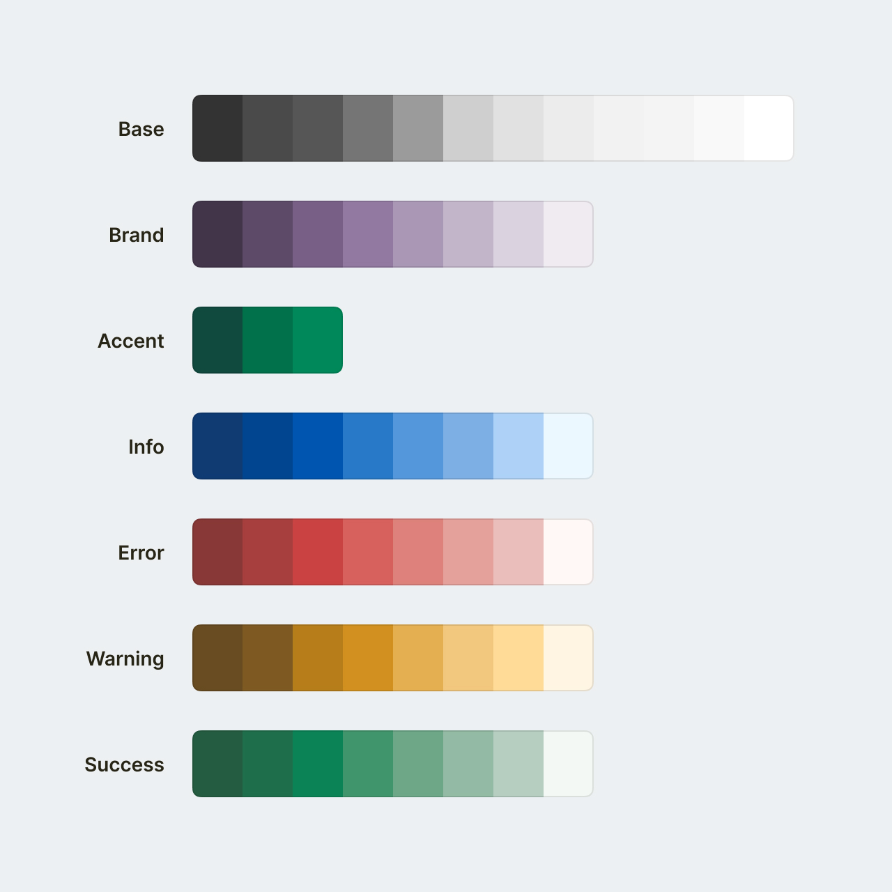
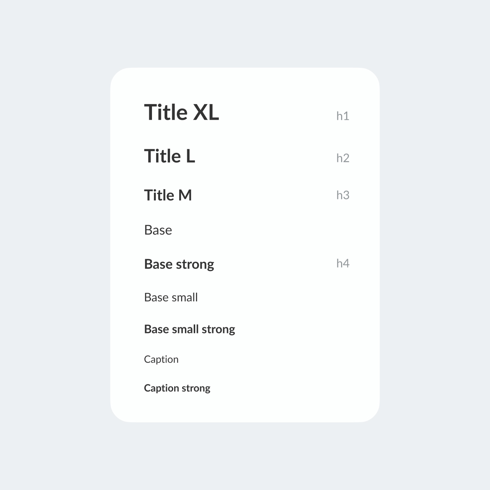

Scaling a legacy LMS
When I joined itslearning, the product suffered from fragmented interfaces, inconsistent UX patterns, low accessibility maturity, and frequent conflicts between designers and developers.
As a Lead Product Designer and Team Lead, I took ownership of transforming the entire UX function: unifying core UX patterns, scaling our design system, and re-establishing strong alignment with engineering.

Context
itslearning is a large European Learning Management System (LMS) with a 25 year long history that serves millions of teachers and students across K-12, higher and vocational education in 10+ markets.
When I joined, I approached the product with this vision: keep what works, evolve what’s valuable, and remove the legacy and silos slowing it down.
Challenges
After a quick but thorough assessment, I identified several foundational challenges:
- A design system in place, but ignored by development teams
- No shared design vision across product, UX, and engineering
- UX and engineering were stuck in a long-running conflict around accessibility decisions
- No consistency in layouts, patterns, and UI decisions
Approach
A redesign wasn’t realistic and not needed — priorities and resources didn’t allow it.
So I took an evolutionary approachinstead: analysing existing patterns, identifying structure, and building a unified system on top of the current product.
Iconography
- Replaced 10+ icon sets with a single system
- Icons are split into 2 categories: System and Brand
- Defined strict usage rules
- Introduced templates for designers
Colors
- Reorganized the palette without changing the UI
- Reduced tokens from 83 → 56
- Defined clear roles for each color
- Mapped 300+ custom colors and replaced them with tokens via script

As a result, no new colors have been introduced in the last 2 years. The usage rules are clear and strainghtforward, with hesitatnce between options being eliminated.


Typography
- Unified the typography system, deprecated ann the unnecessay and interchangeab;e options
- Introduced a font selection for personalization and accessibility
- Mapped dozens of custom styles and unified typography in the legacy part of the system


Attention to detail


Aleksandra combines a rare level of professionalism with a deep commitment to accessibility and product quality. She always ensures her team is moving in a clear, unified direction, and her approach to organizing work is truly impressive. Head of UX at Sanoma Learning
Impact
Product
- Faster development due to predictable patterns
- Increased the design system adoption
- Improved product accessibility
- Consistent cross-platform experience
UX Team
- Scaled the team from 3 → 7 specialists
- Designers grew significantly in maturity and confidence
- Stronger collaboration and mentorship culture
System Foundations
- Introduced layout & page templates
- Replaced 300+ colors with 56 structured tokens
- Unified disparate icon sets into one predictable icon system
- Reorganized the design system for clarity, scalability
Organization
- UX–engineering collaboration strengthened, especially around accessibility
- Accessibility tools adopted across Sanoma Learning (40+ designers)
- Structured how UX and UX Research work together